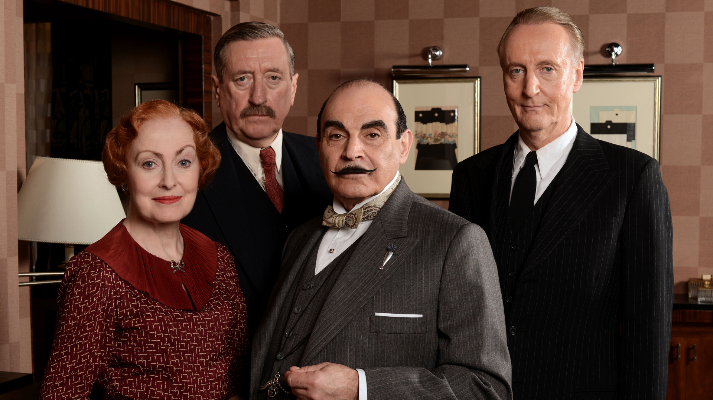

Home
About
Cast
Methods
List of Series
Fanclub
Regular Cast

Image courtesy of
PBS
Hercule Poirot - Played by
David Suchet
Arthur Hastings - Played by
Hugh Fraser
Chief Inspector Japp, James - Played by
Phillip Jackson
Ms. Lemon, Felicity - Played by
Pauline Moran
Ariadne Oliver (Novelist) - Played by
Zoe Wanamaker
George (Valet) - Played by
David Yelland
Home